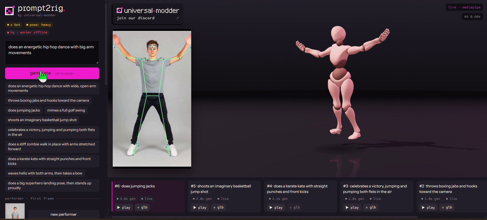
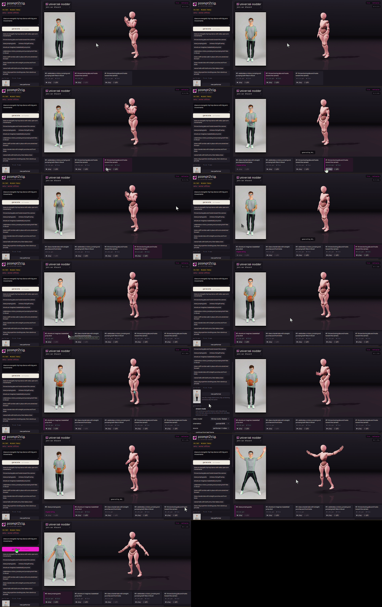
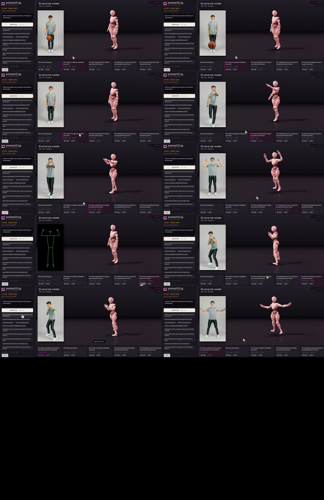

Date: 2026-10-25 (about 20:53–22:30 UTC)
Deliverable:
%USERPROFILE%\Downloads\mixamorig_stefan\prompt2rig_reel\
(Git Bash wrapper project), plus the user's screen recordings
prompt2rig_demo.mp4 (65.3 s) and
prompt2rig_demo2.mp4 (51.8 s) in the same parent folder
Brief: "Read the prompt2rig/ codebase. tell me how i
can create a small beginner project that showcase its capabilities"
Follow-up briefs (verbatim, in order): "write a html
version verbatim" · "does the repo run on GitBash" · "can you create a
project for me. let me know what inputs you need." · "how do i run it ?
what do i expect ?" · "can you run the 3 scripts and open the app at
5177" · "done" · "do these reel demos come with the repo ?" · "where
does the human character come from ?" · "i mean the human character on
the left. where does the character come from"
Final
render/artifact:
journey_media/prompt2rig_demo_sheet.png,
journey_media/prompt2rig_demo2_sheet.png (contact sheets, 1
frame per 5 s),
journey_media/take6_jumping_jacks_frame.png
Provenance: this doc is partly reconstructed. It was written by a later session (the "/dev-journey" thread, starting 22:13 UTC), not by the session that did the build. That session's internal tool calls and raw error output were not available to me. What I had: (a) every message posted in the build thread and in the project chat, with timestamps; (b) the files it produced, in both the cloud project-files copy and on the laptop; (c) the project memory file
prompt2rig-windows-setup.md; (d) the two screen recordings, which I sampled frame by frame. Each section says when a claim comes from a message alone and was not re-checked. Section 2b (this session) is first-hand.
The user had downloaded prompt2rig-main
(blendi-remade/prompt2rig; "type a motion, watch a rigged character
perform it") into %USERPROFILE%\Downloads\mixamorig_stefan
after seeing it in a PixelArtistry YouTube roundup (the links are saved
in README.txt). The ask was open-ended: read the code, then
propose a small project that shows off the repo.
How it was read: "beginner" means something works within 15 minutes. "Showcase" means an output you can show someone: a video reel, not just a working app. The user's standing preferences shaped the tone: a technically deep reader, no fluff, stretch suggestions welcome. That is why the plan ends with a quantitative Tier 3 instead of stopping at a render.
The ask then grew in five steps: guide → HTML copy → Git Bash compatibility → "create a project for me" → "run it for me". Each step is a turn in this story.
%USERPROFILE%\Downloads\other-project, which is
unrelated to this project. It was approved and connected by mistake. The
repo was not in it, so the build session read the cloud
project-files copy at
/mnt/project-files/mixamorig_stefan/prompt2rig-main
instead./mnt/project-files does not sync back to the
laptop. The coordinator had told the user the file was "already
there". It wasn't, on the laptop. Fix: request folder access to
%USERPROFILE%\Downloads\mixamorig_stefan and write the
file with device_commit_files (21:04).
%USERPROFILE%\Downloads\other-project, because that was the
only folder the laptop served for RC. It worked anyway because every
command used absolute paths into mixamorig_stefan. That
luck is recorded in section 6./dev-journey is not a skill registered in the cloud
session. A search of the container's ~/.claude/skills found
only session-start-hook and synced account skills.get_device_info home listing did not include
.claude. I told the user that
%USERPROFILE%\.claude is "off-limits". That was
wrong as stated. It is blocked from folder access
(Claude's own data folders are protected), but not from a Remote Control
session, which runs as the user. The user corrected me:
"%USERPROFILE%\.claude\ is not offlimit".other-project again, even though I passed
folder: %USERPROFILE%\Downloads\mixamorig_stefan. The user
caught it: "wait why do you work in other-project folder/." I stopped it
about 30 s after start. It had reported nothing.mixamorig_stefan as a new RC environment, which I confirmed
via list_devices before waiting on it. The RC session
copied
%USERPROFILE%\.claude\skills\dev-journey\{SKILL.md, CHANGELOG.md}
to mixamorig_stefan\_dev-journey-skill\. It reported that
it touched only those paths.
prompt2rig_reel/ sits beside prompt2rig-main/
and changes no repo files. Repo updates stay clean, and the user's
question "do these reel demos come with the repo?" had a crisp answer:
no.make_env.sh writes UTF-8, and setup_hq.sh
shells out to powershell.exe -ExecutionPolicy Bypass only
for the repo's setup.ps1.make_env.sh
uses read -rsp. The RC session was told never to print or
transmit the key, and the key prompt was opened in a visible Git Bash
window for the user to paste into. This cost a human round-trip (section
6, #5) but was non-negotiable.hq/setup.ps1 (its failures are wrapped and verified from
bash instead of patched in place), no CPU/AMD fallback for the worker
(it hard-codes CUDA), and no automation of the browser UI (the user
presses generate and ↓ glb by hand).The repo was "Tested on Windows 11 with an RTX 4090" (README, line 188). It works on Windows, but its instructions assume PowerShell, a big GPU and a clean path. The real crux was ten small frictions that each fail silently. They were found by reading the code, not by hitting them:
server.mjs parses .env as UTF-8 with a
line regex. PowerShell 5.1's echo FAL_KEY=x > .env
writes UTF-16LE, the regex never matches, and you get
FAL_KEY is not set.FAL_KEY="abc"
sends the quotes and fal returns 401. make_env.sh strips
them and doctor.sh flags them.hq\setup.ps1 is blocked by execution policy, and the
zip carries Mark-of-the-Web.$ErrorActionPreference = "Stop" does
not stop on failing native exes in PS 5.1, so a failed
uv pip install carries on. setup_hq.sh
therefore ends with an explicit
import torch, gvhmr, ultralytics, fastapi; assert torch.cuda.is_available().cu126 lacks sm_120 (RTX 50).
CUDA_INDEX in config.sh sed-patches a copy to
cu128.Downloads\...\mixamorig_stefan\prompt2rig-main.
doctor.sh reads LongPathsEnabled.ffmpeg, so ffmpeg must
be on PATH for Tier 1, not just for renders.Blender 5.2, and
tools/capture.mjs assumes Chrome's default path.device=0,
half=True).And a Git Bash layer on top:
hq/.venv/Scripts/pythonsource activate; call the venv's Python by
pathrun.sh traps and runs taskkill //F //T //PID
on the worker's winpid// doubling for Windows-style flagsThe wart in this section: friction #2 in the published guide
is wrong for the user's actual copy. The guide says
".env.example is absent in your copy, so the README's
cp .env.example .env fails." On the laptop,
prompt2rig-main\.env.example exists (67 bytes, 20:51) and
so does .gitignore. The cloud project-files copy
dropped every dotfile in the upload, and the build session read
only that copy. The 21:24 hand-off ("Your copy has no
.env.example") repeated it. Nobody noticed until this
session listed the laptop folder. It caused no harm, because
make_env.sh writes .env directly, but the
guide states something false.
| Tool / feature | What it did in this project |
|---|---|
| Coordinator + thread model | The coordinator routed 9 user messages into the build thread and spun up this journey thread |
| Claude Docs | Hosted the first guide (3NaVooAX8N9tJmVZcVGait); the
GPU question was left as a doc comment |
| Artifact (HTML page) | "prompt2rig: beginner showcase project (Windows)" attached to the build thread |
Device folder access (device_commit_files,
device_bash) |
Wrote the guide .md/.html and
prompt2rig_reel/ to the laptop; this session also listed
the folder and ran ffprobe |
| Remote Control sessions | Thread 1: doctor.sh, .env check, opened a
Git Bash window "prompt2rig" at the key prompt, restarted the app in
"prompt2rig app", read the status pills. Thread 2: copied the
dev-journey skill |
Cloud container Bash |
Wrote and tested metrics.py (synthetic GLBs); this
session made contact sheets with
ffmpeg -vf fps=1/5,tile |
| Project memory | prompt2rig-windows-setup.md, MEMORY.md:
folder mapping, frictions, GPU, Blender version |
/dev-journey skill |
%USERPROFILE%\.claude\skills\dev-journey\SKILL.md
(2026-09-15) set the structure of this document |
Agents and AI machinery: no subagents and no workflows. Everything was done inline by the coordinator, the build thread, and three short RC sessions (one in the build thread, two in this one). Model identity is not recorded here on purpose.
Tech stack, as built:
prompt2rig = Node server.mjs (port 5177,
fal proxy) → browser three.js app (public/app.js,
retarget.js, stage.js)
pose: heavy) gives a live per-frame
retarget onto a Mixamo rig. X Bot, Michelle and Soldier come from
jsDelivr three.js@r169/examples/models/gltf/.hq/worker.py, FastAPI):
GVHMR + SMPL-X, plus WiLoR/MANO for fingers.PERFORMER_PROMPT
in public/app.js). The performer URL is cached in browser
localStorage.config.sh. metrics.py
needs only numpy: it reads GLB animation channels directly and computes
jerk from quaternion log differences.other-project). Fix: the coordinator retracted
the write instruction within 41 s. Folder access to
mixamorig_stefan was requested at 21:03.device_commit_files to the laptop at 21:04. Cost: three
frustrated user messages../make_env.sh yourself"; 21:26 "Easier now:
there's a Git Bash window titled "prompt2rig" open… Paste your key
there"). The second superseded the first, but the user received
both..env was written at 21:58 (78 bytes), but the app was not
up: "the first window had stopped". The cause was never established. A
guess I can't verify: the window ran
make_env.sh && run.sh --live, and the server
process exited, or the window was closed. Fix: RC restarted the app in a
new Git Bash window "prompt2rig app" and confirmed it up at 22:01.folder: mixamorig_stefan. The user caught it and I stopped
it. The second attempt landed in
a new environment (mixamorig_stefan), verified
with list_devices.Near-misses:
other-project would have put project files in an
unrelated folder. It was retracted before anything was written.config.sh still points at Blender 4.5. The
laptop has 4.4. The 21:24 message offered "I'll point
config.sh at the 4.4 folder unless you'd rather install
4.5". It never got a reply and was never applied. doctor.sh
will report Blender as missing, and
render_reel.sh exits with
Blender not found: edit BLENDER in config.sh.Fragility and luck:
nvidia-smi --query-gpu=memory.total.Checked by observed effect:
http://localhost:5177
and the pills x bot and pose: heavy green,
hq · worker offline, no console errors (22:01, from the RC
session's report)..env: plain text, unquoted FAL_KEY (RC
report). I confirmed it exists on disk at 78 bytes, mtime 21:58, without
reading its contents.metrics.py: run in the cloud container on two synthetic
GLBs (smooth vs noisy). The jerk matched the analytic value within 3%
(build-thread report; not re-run by me).live · mediapipe), portrait 9:16,
h3 max turbo · fastest, source
performer → video.prompts.txt:
Observed but unexplained:
live badge, and its
↓ glb button looks greyed out in both recordings. Possible
cause: pose tracking produced no usable motion for that clip (it has
kicks, and side-on limbs break the repo's own prompt rule). Not
investigated.Not verified:
prompt2rig-main\takes\ does not
exist.setup_hq.sh), Tier 2
(render_reel.sh) and Tier 3 on real takes have never run on
the laptop.npm install was never run (no
node_modules). Tier 0 does not need it; only
tools/capture.mjs does, via puppeteer-core.Costs and limits: about 7 fal video generations plus at least 1 FLUX.1 schnell performer image (spend estimated in section 7). No quota or rate limit was hit. Wall clock: guide in about 2.5 min (20:54→20:56); wrapper project in about 4 min (21:09→21:13); first live take reachable at 22:01, about 67 min after the first message. Most of that was human round-trips (folder confusion, the 33-min key wait).
Knowledge captured:
/tmp/claude/memory/team/silo/prompt2rig-windows-setup.md
and MEMORY.md (project memory): repo locations,
"project-files does not sync back", other-project folder is unrelated, Git Bash,
RTX 3050 / Blender 4.4 / node 22, the friction list.journey_media/ and
_dev-journey-skill/ (the skill copy used to write it).Unfinished business:
prompt2rig_beginner_guide.md and .html). The
local copy does have .env.example. Low impact, but
it is false.config.sh BLENDER →
/c/Program Files/Blender Foundation/Blender 4.4/blender.exe,
or install 4.5. Blocks Tier 2.↓ glb on each take
(live mode) so takes/*_live.glb exist. Needed for both the
reel and Tier 3.prompts.txt (tennis, Macarena, conductor, finger
counting) is still unrun. The finger-counting prompt is the only one
that tests the hands.Next steps (options, not promises):
config.sh to 4.4, then
./doctor.sh.prompts.txt prompts in live mode and
export them, then ./setup_hq.sh and try one HQ take while
watching nvidia-smi for VRAM._live/_hq pair exists, run
metrics.py --plot. That table turns the demo into a
measured claim ("HQ cuts angular jerk by N×").
journey_media/take6_jumping_jacks_frame.png
journey_media/prompt2rig_demo_sheet.png
journey_media/prompt2rig_demo2_sheet.png